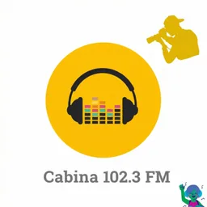
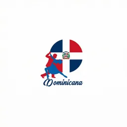
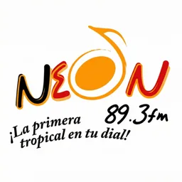
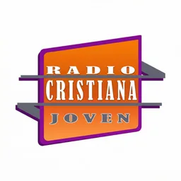
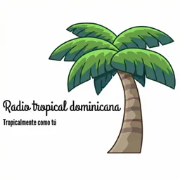
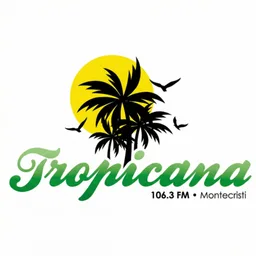

Hub · Género
Radios de salsa y tropical
139 emisoras en vivo en VivoRD
La etiqueta salsa y tropical agrupa emisoras que declaran salsa, tropical u otros ritmos afines en nombre o descripción. Incluye parrillas donde el merengue no es la palabra clave pero sí la estética bailable caribeña. La detección es por regex sobre texto real; no asignamos salsa a emisoras que no lo mencionen.
Santo Domingo y Santiago concentran parte del listado, pero hay señales provinciales con fuerte componente tropical para colmados, taxis y festivales. Cada ficha mantiene reproductor web y datos verificables.
Streams no saludables quedan fuera hasta recuperarse. VivoRD prioriza experiencia de oyente sobre volumen de catálogo.
Explora también hubs de merengue y bachata porque muchas emisoras tropicales cruzan géneros. La guía de merengue y bachata enlazada ofrece contexto editorial adicional.
Los carnavales y fiestas patronales del país suelen reflejarse en estas parrillas; escuchar en línea permite seguir esos picos de energía tropical aunque no estés en el barrio.
Colmados, colores y vendedores ambulantes siguen siendo el público natural de estas frecuencias; el streaming replica parte de esa atmósfera para quienes extrañan el Caribe desde el exterior.
Si buscas una emisora concreta, usa el buscador general de VivoRD además de este listado temático.
Emisoras





